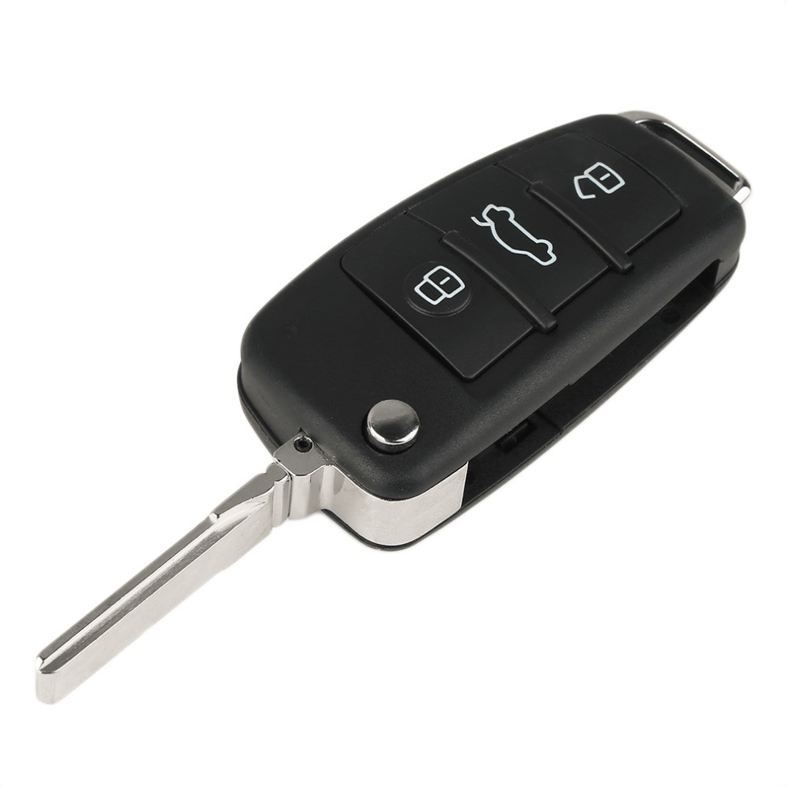

Скільки коштує чіп-ключ для авто у 2026 році

У 2026 році ціна чіп-ключа для авто в Україні коливається від 1500 до 12000 грн. Це широкий діапазон, бо все залежить від трьох речей: марка і рік авто, тип ключа (простий, викидний, smart) і чи є робочий оригінал. У цій статті — повний прайс по основних марках і пояснення, від чого залежить кінцева ціна.
Хочете дізнатися точну ціну?
Зателефонуйте — за 2 хвилини скажемо вартість для вашого авто
Від чого залежить ціна чіп-ключа
- Марка і рік авто. Преміум (BMW, Mercedes, Lexus) дорожчі за бюджетні (Hyundai, Renault, Dacia). Нові авто з AES-шифруванням дорожчі за старіші.
- Тип ключа. Простий ключ дешевший за викидний, викидний — за smart-key. Найдорожчі — дисплейні ключі BMW і smart-ключі з картою (Renault Megane III/IV).
- Чи є оригінал. При наявності робочого ключа — просто клонування або додавання нового. Без оригіналу (повна втрата) — потрібне зчитування блоку імобілайзера, ціна на 30-50% більша.
- Складність прив'язки. Для деяких авто (Mercedes FBS3, BMW FEM/BDC) потрібно знімати блок з машини — це окрема робота.
Орієнтовний прайс по марках (2026, з оригіналом)
| Марка / клас | Викидний / звичайний | Smart-key |
|---|---|---|
| Бюджетні: Renault, Dacia, Hyundai, Kia до 2014 | 1700–2300 грн | 3000–4000 грн |
| VAG до 2013: VW, Audi, Skoda, Seat (ID48) | 2200–2800 грн | 3500–4500 грн |
| VAG MQB з 2013 (Megamos AES) | — | 4500–6500 грн |
| Ford, Mazda (4D, HITAG) | 2200–2800 грн | 4000–5500 грн |
| Toyota / Lexus до 2014 (G-chip) | 2500–3500 грн | 4500–6000 грн |
| Toyota / Lexus з 2014 (H-chip) | — | 5500–8000 грн |
| BMW EWS / CAS1-CAS3 | 2800–4000 грн | 4500–6000 грн |
| BMW CAS4 / FEM / BDC | — | 5500–9000 грн |
| Mercedes-Benz FBS3 | — | 4500–6500 грн |
| Mercedes-Benz FBS4 | — | 6500–10000 грн |
| Honda / Acura | 2200–3000 грн | 4500–6000 грн |
| Subaru, Mitsubishi | 2300–3000 грн | 4000–5500 грн |
Ціни при повній втраті (без оригіналу)
| Марка / клас | Ціна | Час |
|---|---|---|
| Бюджетні (Renault, Hyundai, Kia до 2014) | 3000–4500 грн | 1-2 год |
| VAG до 2013 | 3500–5000 грн | 2-3 год |
| VAG MQB з 2013 | 5500–8000 грн | 3-5 год |
| BMW (CAS3, CAS4, FEM) | 4500–9000 грн | 2-4 год |
| Mercedes-Benz (FBS3, FBS4) | 6500–12000 грн | 3-5 год |
| Toyota / Lexus H-chip | 6500–10000 грн | 3-5 год |
Чому дилер бере у 2-4 рази дорожче
У офіційного дилера BMW або Mercedes ключ при повній втраті коштує 15000-40000 грн. Чому така різниця?
- Дилер замовляє оригінальний ключ із заводу під ваш VIN — це 1-3 тижні очікування
- Транспортні та митні витрати
- Націнка офіційного представника (часто 100-200%)
- Дилерське програмування — за нормо-години (1-3 нормо-години)
Незалежний майстер використовує те саме обладнання (Autel IM608, Lonsdor K518, VVDI BMW Tool, AVDI) — це професійні програматори що працюють з рідним протоколом авто. Якість програмування ідентична. Тільки ключ — або якісний аналог, або оригінальний (можна купити на eBay в 2-3 рази дешевше).
Як заощадити на чіп-ключі (легальні способи)
- Зробіть дублікат поки маєте оригінал. Дублікат коштує у 2 рази дешевше ніж ключ при повній втраті.
- Розгляньте клонування замість програмування (тільки для авто до 2013 без AES). Економія 500-1500 грн.
- Привезіть ключ-заготовку з-за кордону — на eBay або Aliexpress оригінальний BMW ключ коштує $80-150, а в Україні в магазині — $200-400. Прописка у нас — від 2500 грн.
- Використайте якісний аналог корпусу замість оригіналу — заощадите 300-1000 грн без втрати функціоналу.
- Замініть тільки чіп якщо корпус цілий — від 1500 грн.
Що не входить у ціну і за що можуть доплатити
- Евакуатор (якщо авто не на ходу) — від 800 грн
- Виїзд майстра (для нескладних робіт, в межах Ужгорода) — від 500 грн
- Зняття блоку імобілайзера (для деяких BMW, Mercedes) — від 1500 грн
- Нарізка леза за замком (без оригіналу) — від 800 грн
- Перекодування замка дверей після втрати — від 1500 грн
Часті запитання про ціну
Від чого залежить ціна чіп-ключа?
Від трьох факторів: 1) Марка і рік авто, 2) Тип ключа (простий, викидний, smart, дисплейний), 3) Чи є оригінал (без оригіналу на 30-50% дорожче).
Чому дилер бере у 2-4 рази дорожче?
Дилер замовляє ключ із заводу під ваш VIN, плюс націнка, плюс програмування. Незалежні майстри використовують те саме обладнання і можуть зробити те саме за 2-5 годин на місці і дешевше.
Коли можна обійтися дешевим клонуванням?
Якщо маєте робочий оригінал і авто старіше 2013 року з чіпами Texas 4D або Philips ID46 — клонування коштує від 1500 грн (проти 2500+ за програмування). Для нових авто з AES-шифруванням клонування технічно неможливе.
Чи ціна включає роботу і чіп?
Так. У всіх наших цінах вже враховано: заготовка ключа, чіп, фрезерування леза і прив'язка до авто. Доплачують лише за виїзд або евакуатор якщо потрібно.
Хочете точну ціну за вашим авто?
Зателефонуйте і скажіть VIN — підкажемо за 2 хвилини